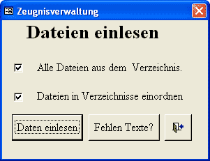
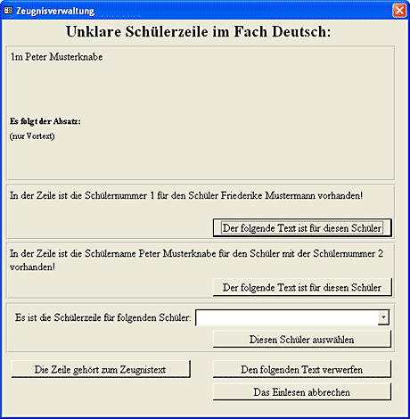
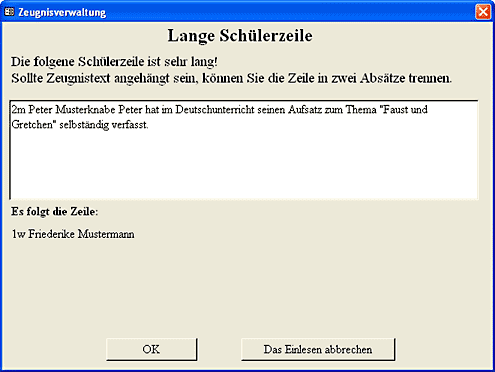
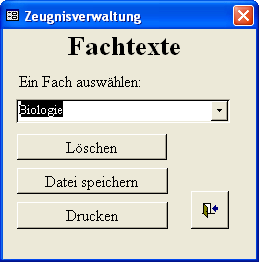

Texel-Hilfe

Einleitung
Beispiele
Überblick
Installation
Organisation
Einstellungen
Schülerdaten
Layout
Dateivorlagen
Schreiben
Einlesen
Korrigieren
Ausdrucken
Lückentexteditor
Kontakt
Eine Zeugnisverwaltung für Waldorfschulen
Jetzt werden alle Dateien in die Datenbank eingelesen.

Sammeln und Durchschauen der Dateien
Einlesen der Dateien
Problemlösungen
Verwalten der Fachtexte
Sammeln und Durchschauen der Dateien
Kurz vor der Zeugniskonferenz, in der die Zeugnisse Korrektur gelesen werden, müssen alle Disketten mit den fertig schriebenen Fachtexten abgegeben sein.
Die Dateien aller zu bearbeitenden Klassen werden in einem Verzeichnis auf der Festplatte des Rechners, auf dem die Zeugnisdatenbank installiert ist, gesammelt.
Viele Probleme, die beim Einlesen auftauchen können, lassen sich vermeiden, wenn die Dateien vor dem Einlesen in die Datenbank kurz auf formelle Fehler durchgesehen werden. Dazu sind vor allem bei vielen Klassen mehrere Kollegen nötig, da die Zeit jetzt drängt.
Achten sollte man auf folgende Punkte:
Steht am Anfang die Lehrerzeile im richtigen Format?
Beginnen alle Schülerzeilen mit einer Schülernummer?
Folgt in der Schülerzeile auf den Schülernamen kein weiterer Text?
Sind in den Fachtexte unnötige Zeilenumbrüche, die das Zeugnis unnötig viel Pltaz einnehmen lassen?
Dabei genügt es die Dateien grob anzuschauen. die meisten Probleme werden beim Einlesen von Texel erkannt und können dan noch korrigiert werden.
Einlesen der Dateien
Soll nur eine einzelne Datei eingelesen werden und nicht in einen Ordner eingeordnet werden, wird keine der beiden Optionen angewählt. Sollen alle Dateien einer Klasse aus einem Verzeichnis eingelesen werden, wählen Sie die Option Alle Dateien aus dem Verzeichnis.
Beim Einlesen der Dateien sollte man die Dateien gleich in ein Verzeichnis einordnen lassen, das den Namen der Klasse trägt. so sind die Dateien nach dem Einlesen sortiert und man kann sehen, welche Dateien noch eingelesen werden müssen, falls später noch Dateien hinzukommen. Wählen Sie dazu die Option Dateien in Verzeichnisse einordnen.
So können nacheinander die Dateien aller Klassen in die verschiedenen Datenbanken eingelesen werden, bis keine Datei mehr im Verzeichnis vorhanden sind. Alle Dateien sind dann schon sortiert und können archiviert werden. Sollte später eine Datei noch einmal eingelesen werden müssen, wählen Sie beide Optionen ab und lesen die einzelne Datei noch einmal ein.
Gibt es beim Einlesen keine Probleme, erfahren Sie beim Einlesen, welche Faächer eingelesen werden und wie viele Texte jeweils abgespeichert wurden. Haken sie die Fächer in Ihrem Ausdruck des Layouts ab und notieren Sie jeweils die Anzahl der eingelesenen Texte. So bekommen Sie einen Überblick, wo noch Texte fehlen.
Auch die Schaltfläche Fehlen Texte? gibt Auskunft darüber, zu welchen Fächern des Layouts nch keine Texte eingelesen wurden.
Beim Einlesen werden auch Lücken in Lückentexten ersetzt und die angewählten Korrekturen gemacht. Über das Einlesen und die dabei gemachten Korrekturen wird ein Protokoll geführt. Dieses kann eingesehen werden über die entsprechende Schaltfläche im Formular Klasse und Schuljahr.
Ist in der Datei ein Vortext für alle Schüler vorhanden, wird dieser jetzt jedem einzelnen Schülertext vorangestellt. Korrekturen in dem Vortext müssen dann bei jedem Schüler gemacht werden. Allerdings ist eine klassenweite Ersetzen-Funktion vorhanden, so dass Korrekturen nicht für jeden einzelnen Schüler gemacht werden müssen.
Problemlösungen
Entsprechen die Dateien nicht dem geforderten Format können beim Einlesen Fehler auftreten. Die häufigsten Fehler werden aber automatisch erkannt und können während des Einlesens noch korrigiert werden.
Ein Fehler tritt auf, wenn in der Schülerzeile die Schülernummer nicht dem Schülernamen entspricht. Entweder wurde beim Schreiben der Zeugnisse die Nummer geändert oder der Name anders geschrieben. Stellt Texel dies fest erschen ein Dialog in dem die Schülerzeile un der nachfolgende Text angezeigt wird. Sie können dann auswählen, zu welchem Schüler der Text gehören soll, oder angeben, dass der Text nicht aingelesen werden soll. Es kann auch vorkommen, dass Texel eine Textzeile für eine Schülerzeile hält. Auch das kann in diesem Dialog angegeben werden.

Es tritt vielleicht auch der Fall auf, das der Fachtext noch in der Schülerzeile beginnt, also kein Zeilenumbruch nach dem Schülernamen vorhanden ist. Ist eine Schülerzeile ungewöhnlich lang, merkt Texel dies und zeigt die Zeile in einem Dialog an. Sie können die Zeile jetzt noch an der richtigen Stelle durch Drücken der Eingabetaste trennen und das Einlesen fortsetzen.

Ist für ein Fach schon ein Text in der Datenbank abgespeichert, wird beim Einlesen gefragt, ob der alte Text ersetzt oder behalten werden soll. Der neue Text kann auch vor oder hinter den alten Text gehängt werden. So können Texte von mehreren Kollegen zu einem Fach zusammengeführt werden.
Gibt es beim Einlesen andere Probleme und werden die Texte eines Faches nicht richtig eingelesen, muss die Datei korrigiert und erneut eingelesen werden.
Verwalten der Fachtexte

Hier können Sie sämtliche Texte eines Faches löschen, auf ein Extrablatt ausdrucken oder als Textdatei abspeichern. So können z. B. Texte gelöscht werden, die fehlerhaft eingelesen wurden.